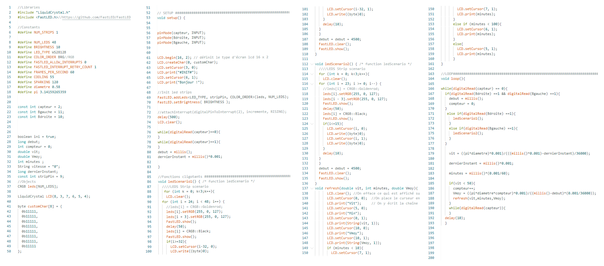

-
Moniteur pour vélo
- #Proteus
- #Creo
- #Impression3D
- #Arduino

Le moniteur pour vélo est un projet en lien avec mon école, l'INSA de Strasbourg. Dans ce projet j'ai entièrement réaliser la partie électronique et mécanique, tantdis que mon co-équipier à réaliser la partie programmation.
En savoir plus
-

Le projet du moniteur de vélo a pour but d'aider les cyclistes dans leur séance à moindre frais. En effet, nous souhaitions le rendre fabricable et programable pas tous.tes pour qu'une communauté puisse faire avancer le projet, à la façon de Pine64.
Nous avons donc décidé d'utiliser une arduino nano pour le microprocesseur, un capteur de champ de hall et des aimants pour calculer la vitesse, et un afficheur LCD en guise d'écran. Le tout ranger dans une boite en impression 3D personnalisée.
Mais ce projet ne se résume pas uniquement à l'électronique, voici les 3 parties importantes de ce projet.
-
Mécanique

Ce projet comportait une partie mécanique que j'ai aussi réalisé, et je vous invite à la découvrir dans la section "Mécanique" du portfolio.
Découvrir la mécanique
-
Electronique

J'étais en charge de la partie électronique du projet, je vais vous le présenter maintenant
Relire le projet
-
Programmation

La partie programmation a été réalisé par mon co-équipier, je ne la présenterais donc pas, mais il s'agissait d'un code arduino avec pour objectif le multithreding et la gestion des interruptions.
Si vous souhaitez approfondir le projet où voir les fichiers sources, rendez-vous sur github.
Aller sur github
-

-
Une manette de console
- #Proteus
- #Creo
- #Impression3D
- #Arduino
Lors de la réalisation de petit robot, comme un bras robot, j'ai remarqué qu'il pouvait être difficile de trouver un controller adéquat à nos besoins, car leur moyen de communication était souvent plus évolué que nécessaire. J'ai alors décidé de créer un manette de type "manette de console" mais avec en sorti un signal simple à comprendre pour une arduino.
Manipuler des pièces
-
Mécanique
Pour assurer le maintient du moniteur il nous fallait une boite adapter à la course et simple à enlever. C'est pourquoi j'ai opté pour un système de cercle d'aimants puissants.
-
Electronique
Pour la réalisation de la formation des nouveaux entrants dans un club de robotique dont je suis le président, j'ai co-réaliser un boitier pour une lampe torche.
-
Documentation
Pour ce projet, la documentation est une partie très importante car il a pour objectif de servir dans de nombreux projets et être utilisé par autant de personnes. J'ai donc décidé de réaliser un github correctement réalisé, pour y expliquer toutes les étapes pour la fabriquer mais aussi l'utilisé.
-
En lire plus sur GitHub
-
Lampe torche de survie
- #Arduino
- #html
- #css
- #Java
- #Python

Etant co-président d'un club de robotique, j'ai été chargé de créer les tutos de formations des nouveaux membres de l'année 2022-2023. Aimant la randonnée, j'ai décidé de partir sur une lampe torche avec différentes fonctionnalités, comme un appel SOS automatique en cas d'urgence.
-
-
Mécanique

J'ai longtemps réalisé des sites internets sans les mettre en ligne, mais lors de ma première année de classe préparatoire j'ai soté le pas et fait le site d'AEP, une association de mon école. Cette année, j'ai décidé de lancer deux nouveaux sites, celui du CRIS, un club de robotique dont je suis président, et mo portfolio que vous voyez en ce moment.
-
Electronique
Pour un projet d'un module d'informatique nous avons dû réaliser un site internet capable de prendre en charger un système de compte avec des privilèges différents et l'inscription à des modules.
-
Programmation
Lors de ma première année de classe préparatoire nous avions dû réaliser un logiciel permettant le tracer, la personnalisation des propriétés et le calcul de force sur un trellis, le tout en Java.